Docs
Paged and multi-page views, rulers and page setup, headers and footers, page numbers and sections; style gallery, footnotes, comments and document comparison. Equations, find and replace, word count, document protection.
Local-first · Open source · No account
A desktop office suite that reads and writes Word, Excel, PowerPoint, PDF and Markdown in their native formats. Double-click and it opens — nothing goes missing when you are offline. No sign-in, no uploads, no ads.
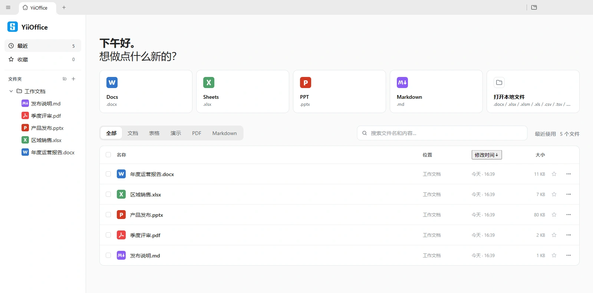
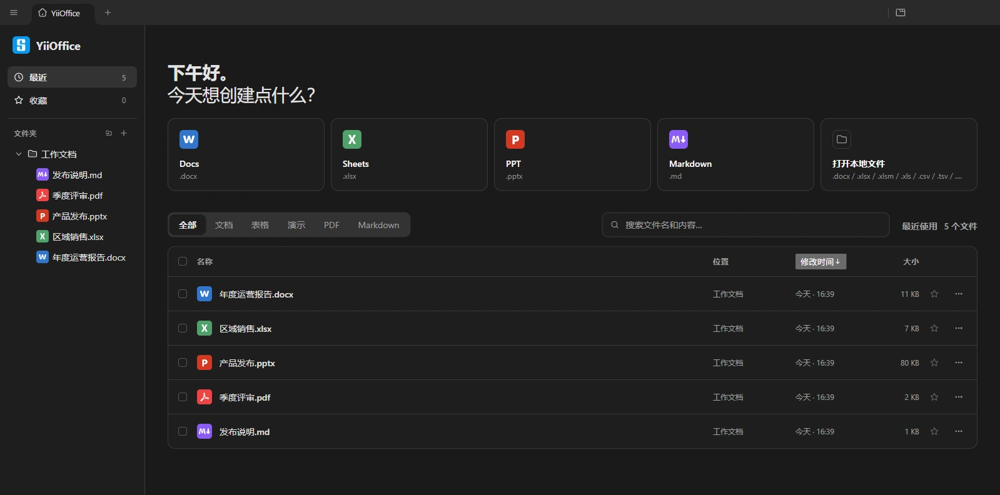
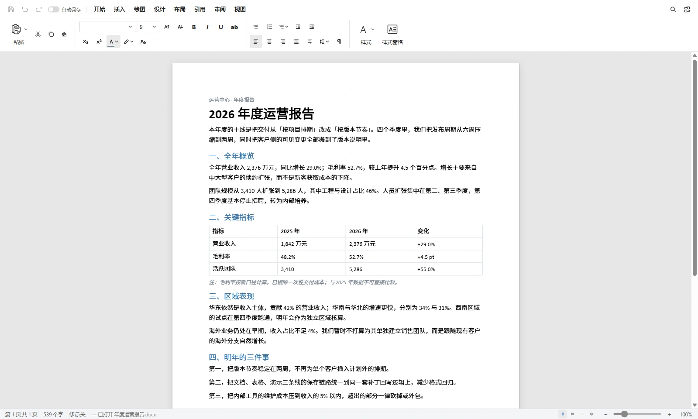
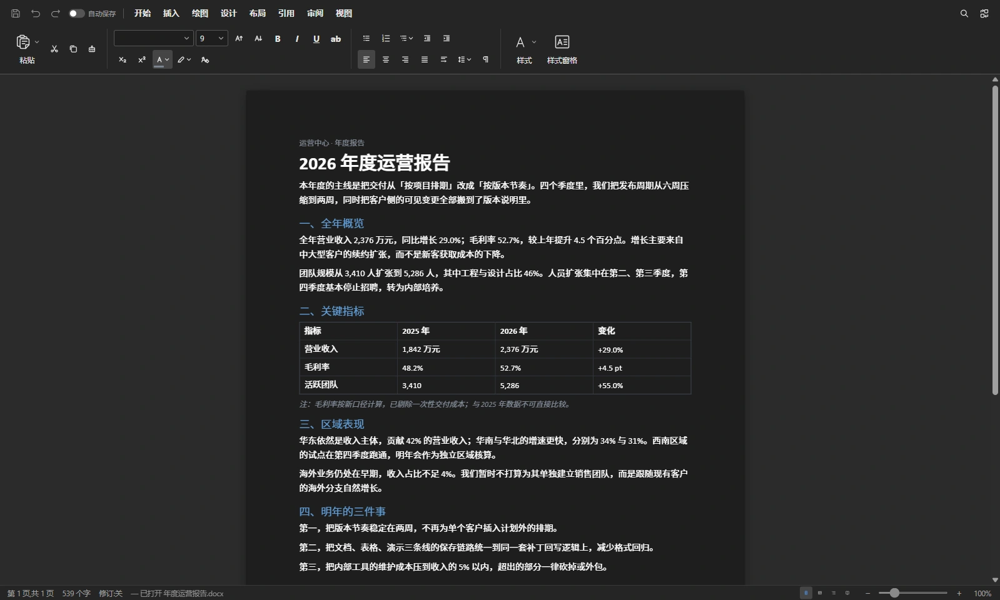
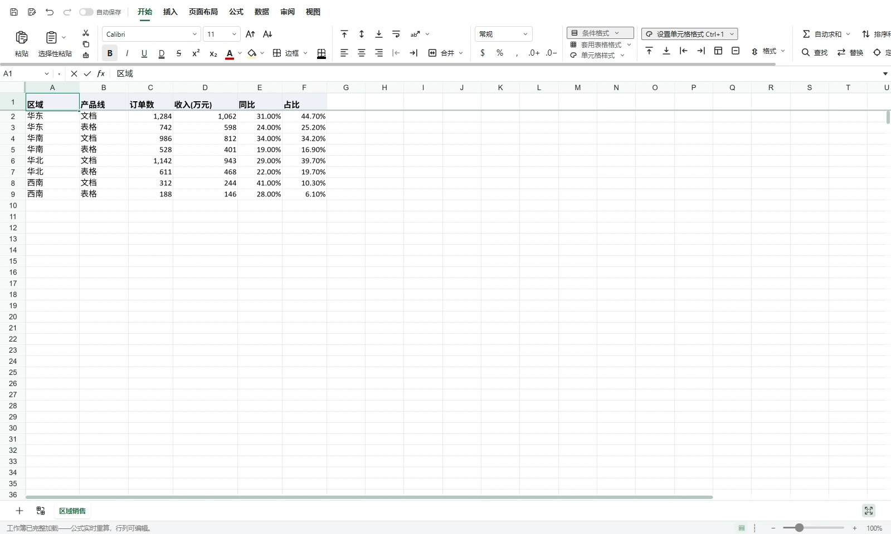
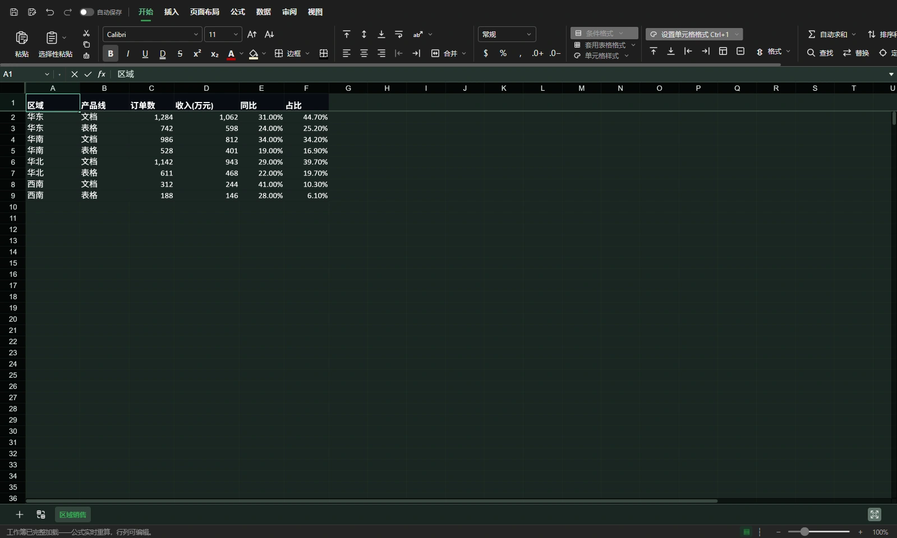
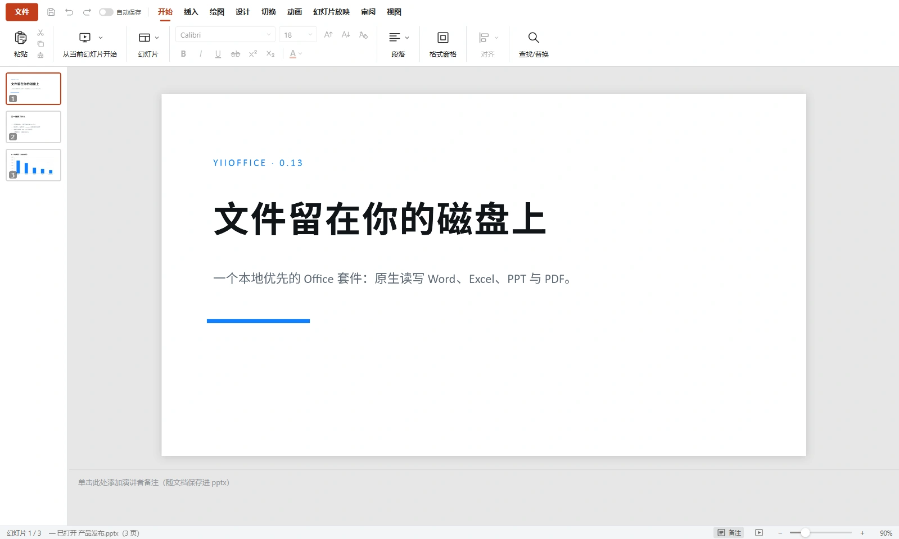
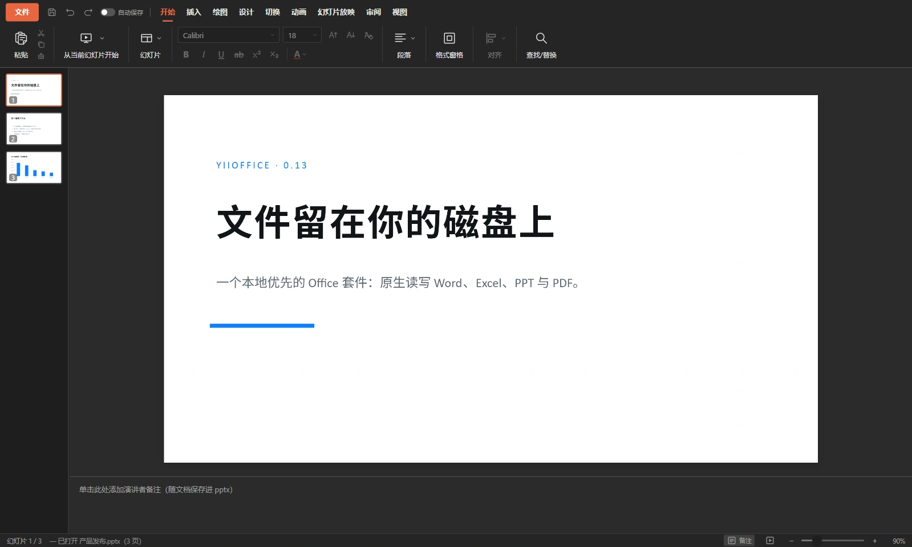
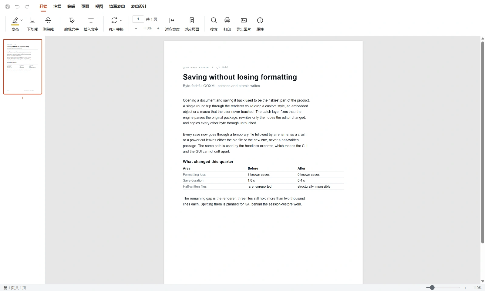
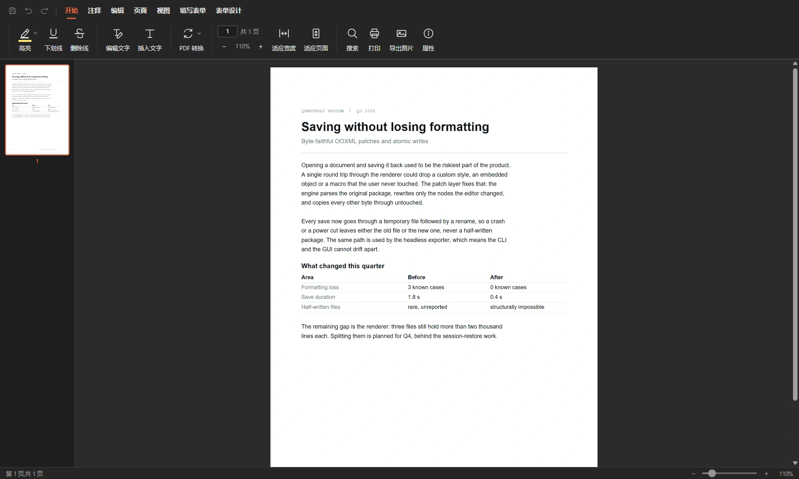
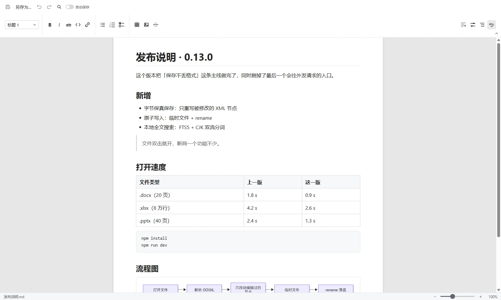
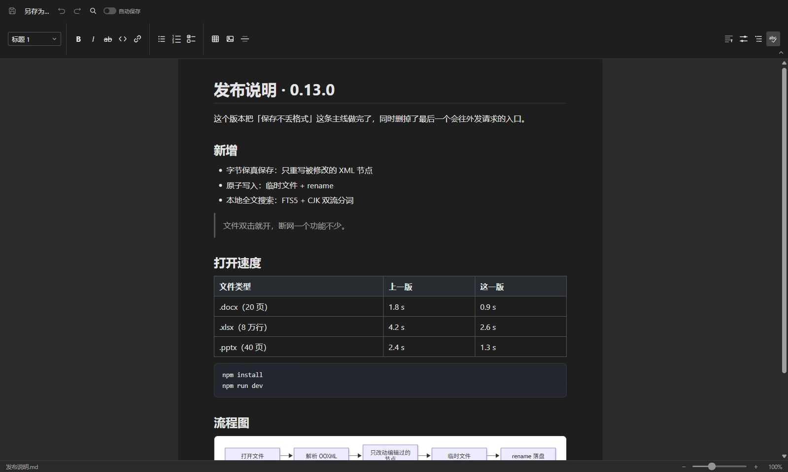
Editors
Every editor runs on its own or as a tab in the same workspace. Switching tabs only shows and hides them — scroll position, caret and undo stack are all kept.
Paged and multi-page views, rulers and page setup, headers and footers, page numbers and sections; style gallery, footnotes, comments and document comparison. Equations, find and replace, word count, document protection.
A formula and function library with argument hints, conditional formatting, data validation, sort and filter; pivot tables, charts, grouping, consolidated sheets, worksheet protection and paged printing.
Masters and layouts, text, shapes, images and charts; animations and transitions including Morph; presentation mode, presenter view and custom shows, notes, comments and non-destructive cropping.
Edit text and images right on the page. Annotations, outline navigation, page operations, form design and filling, redaction, signatures and stamps, password protection.
WYSIWYG and source views side by side, with tables, code blocks and images. Mermaid diagrams and KaTeX math render in place; export to DOCX, PDF or images.
Turn a PDF into editable Word, Excel or PowerPoint, or an HTML page into DOCX. All of it runs on your machine — no upload, no quota, no account.
Open, edit and save on your own disk. The app never uploads, syncs or backs anything up for you — where a file lives and what it is called stays your decision.
Where the network endsEditing, saving, search and conversion all run locally. There is exactly one default outbound request: loading remote images a document points at. The font download for slides only turns on when a CDN address is injected at build time.
Saves are OOXML patches: only the nodes you touched are rewritten, every other byte stays as it was. Styles, comments, embedded objects and macros survive, and Word or WPS opens the result as usual.
No sign-up, no usage data, no update pings. There is no hidden paywall in the interface — the main screen is just your own file list.
Capabilities
Saves that never corrupt a file, crashes that never lose work, search that finds Chinese text — the quiet parts are what you rely on daily.
Every save goes through a temporary file and a rename, so a crash or a power cut never leaves half a file behind.
FTS5 on node:sqlite, covering names, paths and body text. Chinese is
indexed as both bigrams and unigrams, so two-character queries match long strings.
Each tab is its own WebContentsView. Switching only shows and hides it, so the editor keeps its full state.
--headless-export converts to PDF without opening a window, and
--json prints one structured line for scripts and batch jobs.
Interface strings live in @yiioffice/i18n, switchable between Chinese and English, decoupled from feature code.
All five editors print directly; Docs and Markdown export to PDF, Slides exports to SVG and images.
Stack
Get started
npm install postinstall step downloads the Electron binary; a mirror
variable is available if that is slow.
# install every workspace at once npm install # generate the .docx test fixtures npm run fixtures # five renderers on :5173–:5177 plus the Electron main process npm run dev
# portable zip npm run dist:win # NSIS installer (installs to D:\YiiOffice by default) npm run dist:win:installer # macOS / Linux npm run dist:mac npm run dist:linux
# tests across all 19 workspaces npm test npm run typecheck npm run lint # colours must use theme variables; comments and logs must be English npm run check:theme-colors npm run check:english-comments
npm run dev:docs, dev:sheets … it
opens its own window and skips the workspace.
FAQ
npm run dist:mac or
npm run dist:linux. There is no auto-updater — upgrading means
downloading again.
unicode61 tokenizer does not split continuous Chinese, so the
index also emits bigram and unigram tokens; both two-character and single-character
queries match.
npm run dev runs, but editor tabs stay blank?The code, the component split and the build scripts are all in the repository — there is no hidden paid tier. Add an editor, restyle the interface, or make one format read more accurately: go ahead.